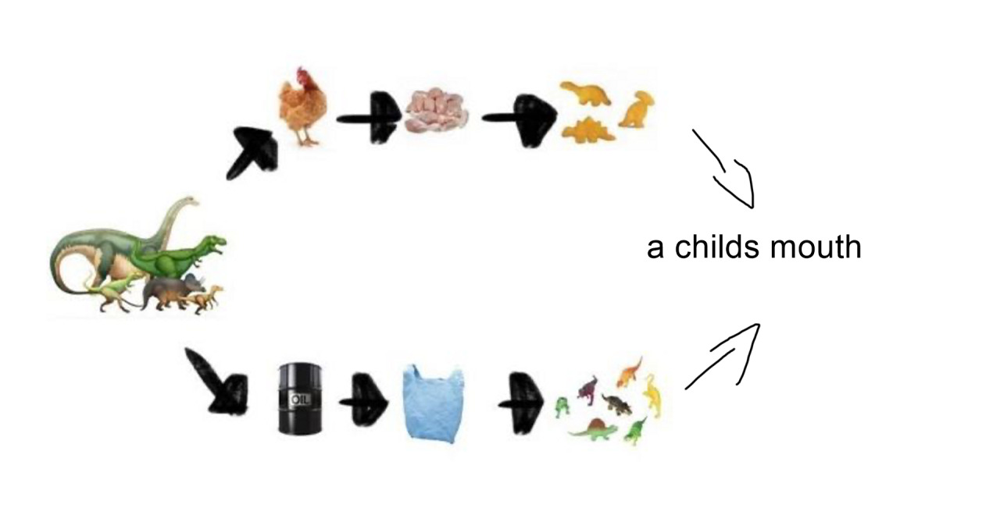

“...Ravel’s Bolero flouted out of eight perfectly matched speakers with fine-meshed matt-black grilles.” (48)
“The term ‘holistic’ refers to my conviction that what we are concerned with here is the fundamental interconnectedness of all things.’ (121)
"...don't you understand that we need to be childish in order to understand? Only a child sees things with perfect clarity, because it hasn't developed all those filters which prevent us from seeing things that we don't expect to see." (183)
“The thing is that your memory doesn’t actually get any bigger, and a lot of stuff just falls out. So you see, the major difference between you and me is not how much I know, but how much I’ve forgotten.” (209)